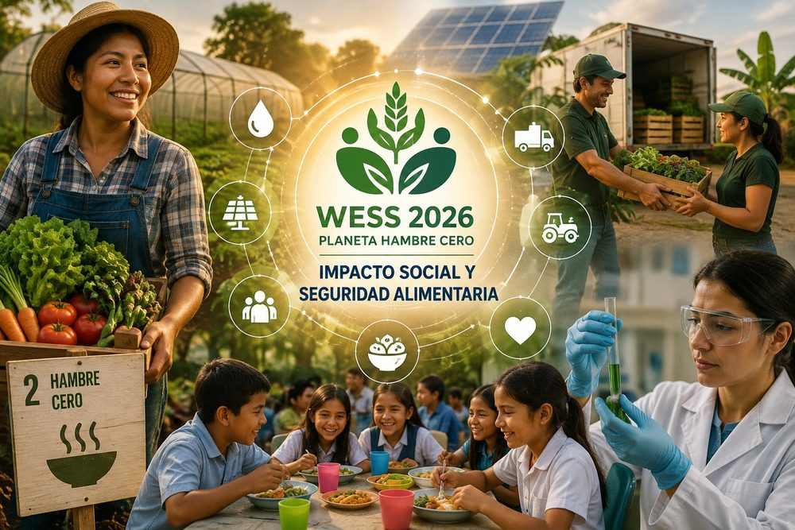
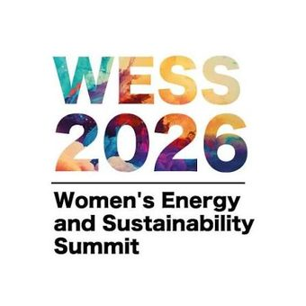
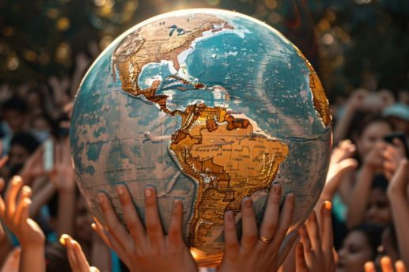
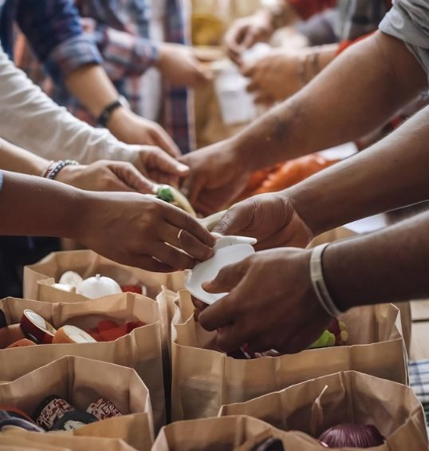

¿Qué es la alianza con WESS?
En Soy Climatika creemos que el liderazgo transforma realidades. Por ello, celebramos que Fernanda Bermúdez participe por tercer año consecutivo como Embajadora del Women Sustainability Summit (WESS) en Ciudad de México, formando además parte del equipo organizador de una de las plataformas más relevantes de sostenibilidad y liderazgo en México.
Con 20 años de experiencia de Smart Media Group creando plataformas de alto impacto, WESS se consolida como un espacio donde las alianzas se convierten en acciones con impacto.


El rol de Fernanda como Embajadora
Como Embajadora, Fernanda forma parte del equipo organizador de WESS, acompañando el diseño de un espacio donde el liderazgo climático y la sostenibilidad se encuentran con la acción real.
Desde Soy Climatika, esta alianza refuerza nuestra manera de trabajar: conectar personas y proyectos que ya están construyendo el futuro que queremos ver. Conocer WESS →
Comunidad e impacto


Conoce más sobre WESS
Descubre la agenda, ponentes y forma de participar en el Women Sustainability Summit.
Visitar wessummit.com →